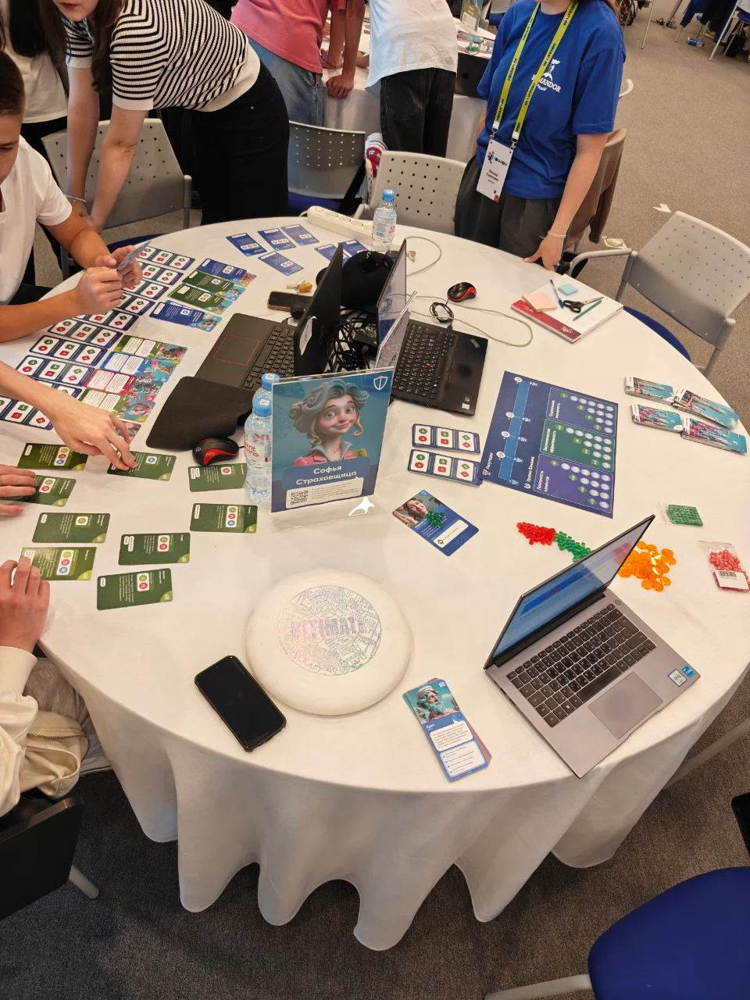

Хранители —
финансовая система через три эпохи
Guardians —
a financial system across three eras
Командная настольная игра-знакомство с банкингом и страхованием. 7 команд по 7 человек строят свою финансовую систему через три исторические эпохи — античность, настоящее, будущее. Аудитория — подростки 14–17 в рамках корпоративной образовательной программы. A team board game introducing banking and insurance. Seven teams of seven build their own financial system across three historical eras — Antiquity, Present, Future. Audience — teenagers 14–17 within a corporate education program.
Что этоWhat it is
Игра-знакомство с банкингом и страхованием для команд подростков. Заказчику было важно, чтобы у участников «что-то отложилось» — реальное знание о продуктах и профессиях, а не презентация на тему. По обратной связи это сработало: после игры участники различают КАСКО и ОСАГО, ориентируются в профессиях банкинга и страхования.
Конструкция — три эпохи как градиентное погружение в продуктовое пространство. Античность — обучающий раунд с упрощёнными механиками. Настоящее — полный продуктовый контур. Ближайшее будущее — расширение сложности. В каждой эпохе команда строит финансовую систему почти с нуля, нанимает сотрудников, решает кейсы клиентов трёх типов (физлица, бизнес, государство), а между раундами участники ротируются между Менеджерами (решают кейсы) и Аналитиками (стратегия команды и голосование за инновации). Ротация даёт каждому попробовать обе стороны — тактические клиентские кейсы и стратегические решения на дереве инноваций.
Команды зарабатывают репутацию и баллы влияния, которые вкладывают в три критерия — лояльность клиентов, экономическая эффективность, социальная значимость. «Социальную значимость» как третий критерий предложили мы и согласовали с заказчиком: вместе с экономикой и лояльностью она задаёт более сбалансированный взгляд на финансовую систему — не только «сколько заработали», но и «кому это помогло».
An introduction to banking and insurance for teams of teenagers. The client wanted participants to actually retain something — real knowledge about products and professions, not a presentation on the topic. Feedback shows it worked: after the game players can distinguish KASKO from OSAGO insurance, and have a working sense of banking and insurance professions.
The structure — three eras as a gradient onboarding into the product space. Antiquity — a training round with simplified mechanics. Present — the full product surface. Near future — extended complexity. In each era a team rebuilds its financial system almost from scratch, hires staff, solves client cases of three types (individuals, businesses, government), and between rounds players rotate between Managers (solving cases) and Analysts (team strategy and innovation voting). The rotation lets every participant try both sides — tactical client cases and strategic decisions on the innovation tree.
Teams earn reputation and influence points, which they invest into three success criteria — customer loyalty, economic efficiency, social significance. The "social significance" criterion was our proposal, signed off by the client: alongside economics and loyalty, it gives a more balanced view of the financial system — not only "how much we earned", but "whom it helped".
Что я сделалWhat I did
Был директором игры: трёхэпохальная структура, ролевая модель с ротацией Менеджеров и Аналитиков, экономика репутации и влияния, три критерия успеха, кейсовая система с тремя типами клиентов, колоды продуктов, сотрудников и инноваций, межкомандное голосование за разблокировку инноваций. Отвечал за механики и баланс.
Генеративная графика — иллюстрации и персонажи. Остальную графику делал другой дизайнер.
Игра хорошо себя показала: заказчик включил её в ежегодную программу.
I was the game director: the three-era structure, the role model with Manager/Analyst rotation, the reputation-and-influence economy, three success criteria, a case system with three client types, decks of products, staff and innovations, and the cross-team innovation vote. Owned mechanics and balance.
Generative graphics — illustrations and characters. Other graphics were handled by another designer.
The game performed well: the client added it to their annual program.
Компоненты и фото Components & photos



.webp)

RDP · Платформа онбординга → RDP · Onboarding Platform →
Геймифицированный онбординг с диалоговым квестом и 20+ сценариями. Gamified onboarding with a dialogue quest and 20+ scenarios.